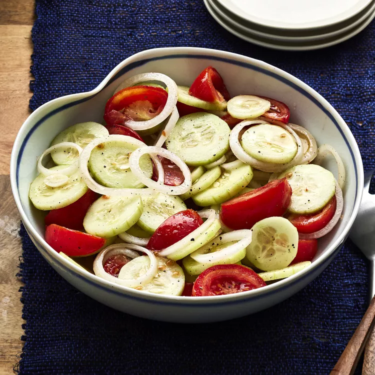

Summer Salad

This easy cucumber, onion, and tomato salad is perfect for a warm summer day.
Ingredients
- 1 cup water
- ½ cup distilled white vinegar
- ¼ cup vegetable oil
- ¼ cup sugar
- 1 teaspoon salt, or to taste
- 1 teaspoon freshly ground black pepper, or to taste
- 3 cucumbers, peeled and sliced 1/4-inch thick
- 3 tomatoes, cut into wedges
- 1 onion, sliced and separated into rings
Directions
- Whisk water, vinegar, oil, sugar, salt, and pepper together in a large bowl until smooth; add cucumbers, tomatoes, and onion and stir to coat.
- Cover bowl with plastic wrap; refrigerate for at least 2 hours.